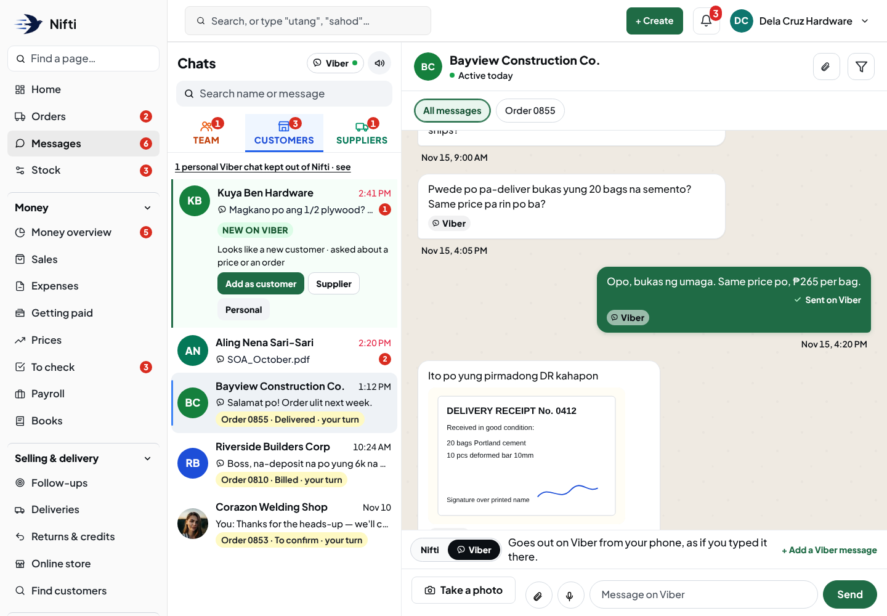
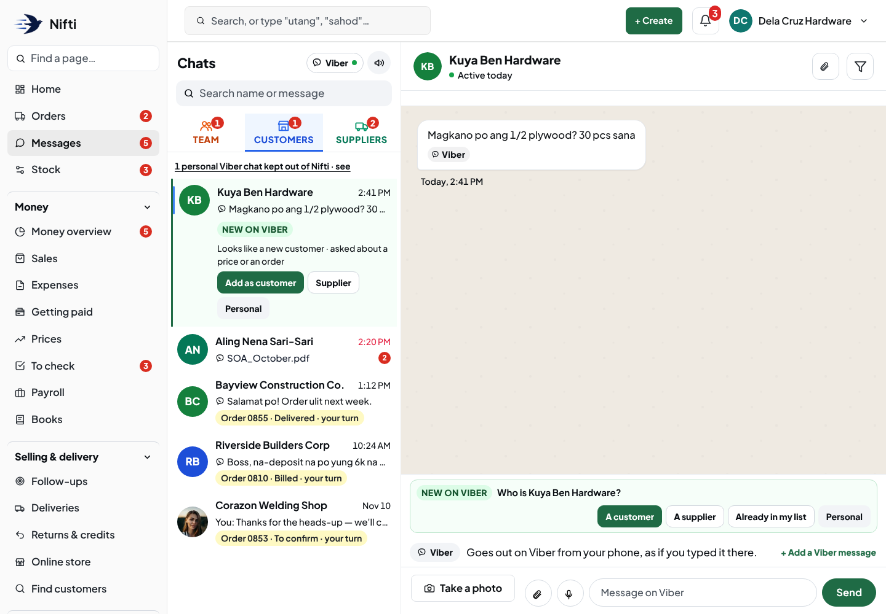
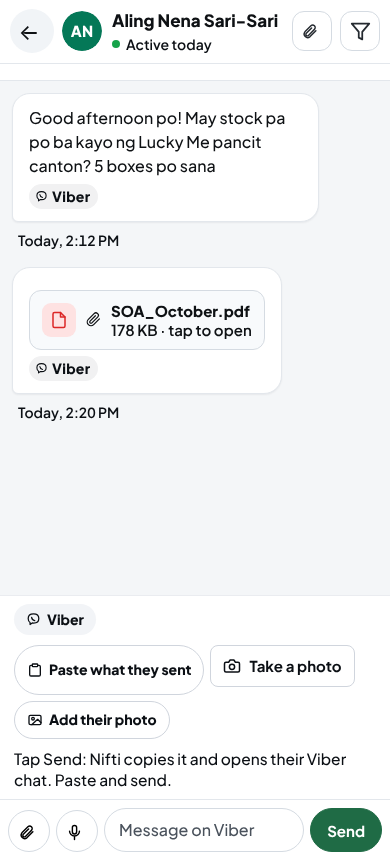

Every Viber chat that comes in is sorted by Nifti first. Your users only see a question when Nifti truly can't tell, and even then it's one tap.
All three use Nifti's guess, so most people answer in one tap. Option A is live in the app now (Messages in the demo: Kuya Ben Hardware). Pick one and I'll switch it.
Sits right where the chat is, so it never interrupts. You can open it and reply first, and decide later. The fewest taps.
Shows the message itself, so the guess is easy to trust. Sits at the top of the list until answered, which is more visible but takes more room.
Big, friendly and impossible to miss. Opens the first time you tap a new contact. Best for people who are new to phones; one more screen than A.

The chat listKuya Ben (new) asks one question. Riverside's Viber message joined their chat by itself. "Mama" is kept out: only a small link says 1 personal chat is hidden.

Replying to someone newYou can answer straight away. "Who is Kuya Ben Hardware?" sits above the message box until you tap one.

On iPhoneCopy their message in Viber, then tap "Paste what they sent". "Add their photo" picks it from Photos. Send opens their Viber chat with your words.